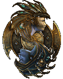
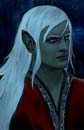

|  |
|


Mod Kim NPC pour BG2 ToB, BG2EE et EETVersion 1.7 Dernière mise à jour 29/10/2023 Requis pour BG2 : - Throne of Bhaal - BG2FixPack (composant "correctifs principaux") |
 Grenouillebleue |
|
DESCRITPION : Personnage recrutable pour Baldur's Gate II, vous pourrez la trouvez à coté de Renald Bloodscalp. Incroyablement belle, délicieusement sensuelle... et terriblement chieuse. Kim la pirate fait escale à Athkathla. Saurez-vous l'apprivoiser ? Kim est romancable par tous les hommes qu'ils soient humains, elfes ou de demi-elfes |
|
|
INSTALLATION : Extraire le contenu de l'archive dans votre répertoire de jeu Lancer Setup-Kim_NPC.exe Suivre les indications. |
Kim |

|
 Akadis |
|
Version 1.44 (02/11/2006)
|
 Stargazer |